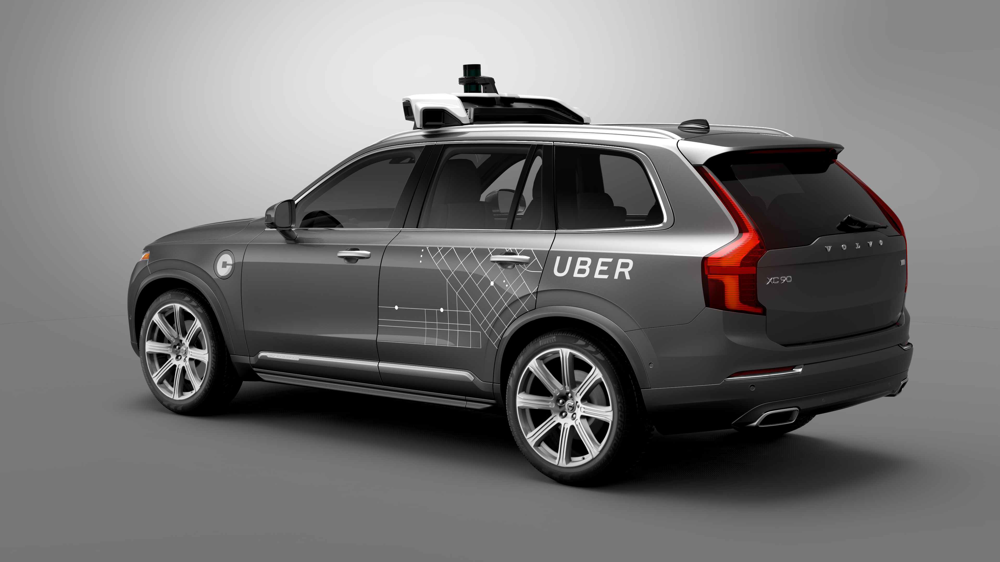

Volvo

Volvo's zelfrijdende auto's
Volvo is een Zweeds merk, dat autorijden heel veilig wilt maken. Veiligheid is daarom ook hun belangrijkste doel en zeggen ze dat in 2020 niemand nog ernstig gewond raakt of een fataal
ongeluk krijgt in een nieuwe Volvo. Om dit doel te bereiken is Volvo ook een 'Autonomous Driving Programm' gestart, omdat ze zeggen dat zelfrijdende auto's het aantal doden en zwaargewonden
drastisch zal verminderen. Volvo is al heel ver in het ontwikkelen van zelfrijdende auto's, maar doen het net zoals Tesla langzaam aan en stap voor stap. In Zweden heeft Volvo aan een paar familie's al deze
zelfrijdende auto's gegeven om te testen en te zorgen dat alles klaar is voor de markt in 2021. Dit is al best snel, maar dat komt doordat Volvo een van de best ontwikkelde AI voor auto's heeft. Deze nemen echt alles waar
en kunnen uit zichzelf anticiperen om ongelukken te voorkomen. Dit alles maakt Volvo volgens Friso echt de koploper.
Voordelen
Volgens Volvo zijn er een paar belangrijke en grote voordelen aan zelfrijdende auto's.
- Future autonomous Volvos will be even better at avoiding potential collisions than today's cars. Because almost all road accidents are caused by human behaviour, journeys will be safer for all mobility users.
- Because Volvo's future unsupervised autonomous cars will know the conditions on the road ahead, they will optimise the use of the engine or brakes,
reducing fuel consumption. By eliminating unnecessary acceleration, your autonomous vehicle will be quieter and more respectful with the environment.
- In the future, you'll be able to let your Volvo park itself, while you get on with other things. These cars will be able to find and park in a space, and even drop you off where you want to go first.
- The least exciting part of your commute and those long journeys will no longer require your constant attention. Thanks to self-driving technology you will always arrive fresh at your destination.
- Insurance premiums for self-driving cars could be much lower in the future. Think about it: the sensors that enable autonomous technology won't get tired or distracted, greatly reducing the chance of a costly collision.
- In a future self-driving Volvo, you will be able to decide how to spend the time on your commute. You will be free to read a book, prepare for a meeting, watch a movie or even learn new skills.
With the average commute taking about 50 minutes per day, this will have a huge impact on our lives.